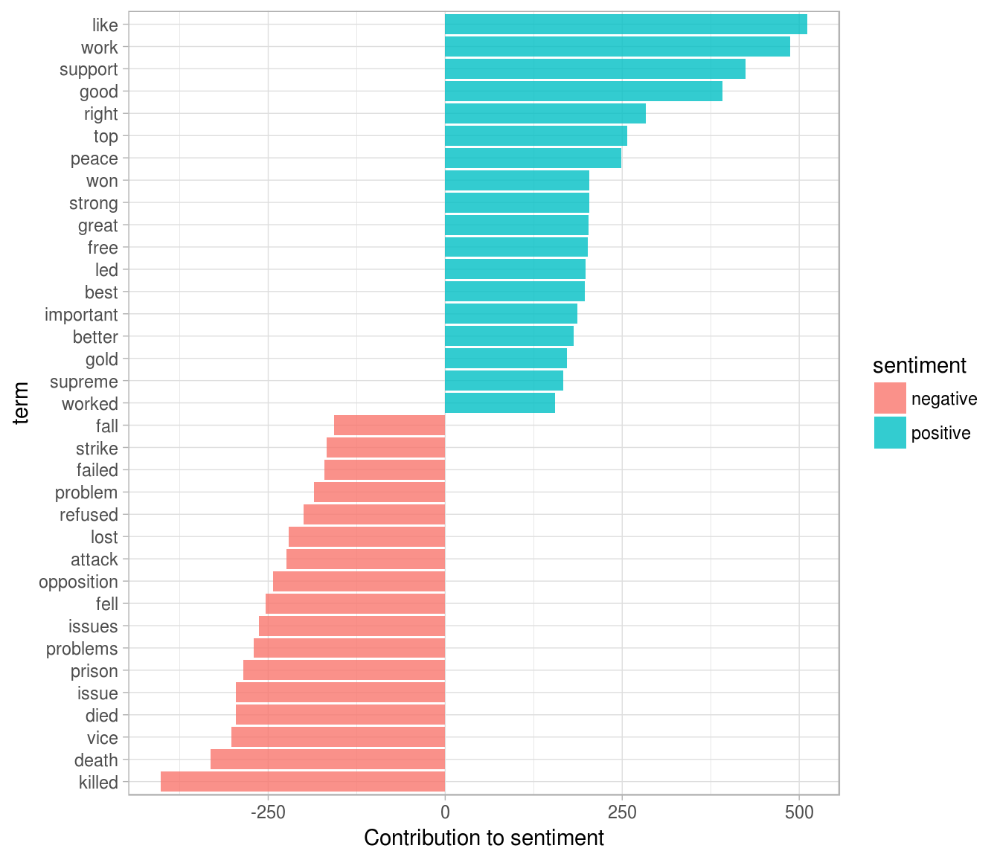
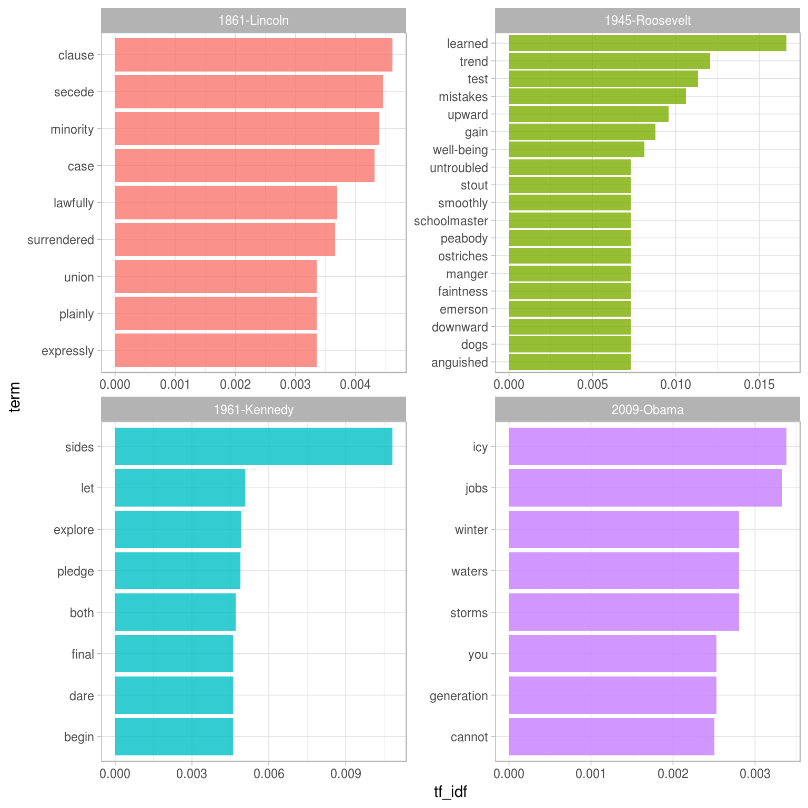

6 Tidying and casting document-term matrices
So far, we’ve been analyzing data in a tidy text structure: a data frame with one-token-per-document-per-row. This lets us use the popular suite of tidy tools such as dplyr, tidyr, and ggplot2. We’ve demonstrated that many text analyses can be performed using these principles.
But many of the existing tools for natural language processing don’t work with this kind of structure. The CRAN Task View for Natural Language Processing lists a large selection of packages that take other inputs. One of the most common is the document-term matrix, a sparse matrix with one row for each document in a collection and one column for each term or word. The value that goes into the matrix is usually a word count or sometimes tf-idf. These matrices are sparse (they consist mostly of zeroes), so special algorithms and data structures can be used to deal with them that are efficient and fast.
The tidytext package can integrate these packages into an analysis while still relying on our tidy tools. The two key verbs are:
tidy(): Constructs a data frame that summarizes a model’s statistical findings.cast_: Turns a tidy one-term-per-row data frame into a document-term matrix. This includescast_sparse()(sparse Matrix),cast_dtm()(DocumentTermMatrixobjects from tm), andcast_dfm()(dfmobjects from quanteda).
6.1 Tidying a document-term matrix
As we have discussed, many existing text mining datasets expect and provide a document-term matrix, or DTM. A DTM is a matrix where
- each row represents one document,
- each column represents one term, and
- each value typically contains the number of appearances of that term in that document.
DTMs are usually implemented as sparse matrices, meaning the vast majority of values are 0. These objects can be interacted with as though they were matrices, but are stored in a more efficient format.
One commonly used implementation of DTMs in R is the DocumentTermMatrix class in the tm package. For example, consider the corpus of 2246 Associated Press articles from the topicmodels package.
library(tm)
data("AssociatedPress", package = "topicmodels")
class(AssociatedPress)## [1] "DocumentTermMatrix" "simple_triplet_matrix"AssociatedPress## <<DocumentTermMatrix (documents: 2246, terms: 10473)>>
## Non-/sparse entries: 302031/23220327
## Sparsity : 99%
## Maximal term length: 18
## Weighting : term frequency (tf)We see that this dataset contains documents (each of them an AP article) and terms (words). Notice that this example DTM is 99% sparse.
If we want to analyze this with tidy tools, we need to turn it into a one-token-per-document-per-row data frame first. The broom package (Robinson et al. 2015) introduced the tidy verb, which takes a non-tidy object and turns it into a data frame. The tidytext package implements that method for DocumentTermClass objects:
library(dplyr)
library(tidytext)
ap_td <- tidy(AssociatedPress)
ap_td## # A tibble: 302,031 × 3
## document term count
## <int> <chr> <dbl>
## 1 1 adding 1
## 2 1 adult 2
## 3 1 ago 1
## 4 1 alcohol 1
## 5 1 allegedly 1
## 6 1 allen 1
## 7 1 apparently 2
## 8 1 appeared 1
## 9 1 arrested 1
## 10 1 assault 1
## # ... with 302,021 more rowsNotice that we now have a tidy three-column tbl_df, with variables document, term, and count. This tidying operation is similar to the melt function from the reshape2 package (Wickham 2007) for non-sparse matrices.
As we’ve seen in chapters 2-5, this form is convenient for analysis with the dplyr and tidytext packages. For example, you can perform sentiment analysis on these newspaper articles.
ap_sentiments <- ap_td %>%
inner_join(get_sentiments("bing"), by = c(term = "word"))
ap_sentiments## # A tibble: 30,094 × 4
## document term count sentiment
## <int> <chr> <dbl> <chr>
## 1 1 assault 1 negative
## 2 1 complex 1 negative
## 3 1 death 1 negative
## 4 1 died 1 negative
## 5 1 good 2 positive
## 6 1 illness 1 negative
## 7 1 killed 2 negative
## 8 1 like 2 positive
## 9 1 liked 1 positive
## 10 1 miracle 1 positive
## # ... with 30,084 more rowsThis could, for example, let us visualize which words from these AP articles most often contributed to positive or negative sentiment:
library(ggplot2)
ap_sentiments %>%
count(sentiment, term, wt = count) %>%
ungroup() %>%
filter(n >= 150) %>%
mutate(n = ifelse(sentiment == "negative", -n, n)) %>%
mutate(term = reorder(term, n)) %>%
ggplot(aes(term, n, fill = sentiment)) +
geom_bar(alpha = 0.8, stat = "identity") +
ylab("Contribution to sentiment") +
coord_flip()
A tidier is also available for the dfm (document-feature matrix) class from the quanteda package (Benoit and Nulty 2016). Consider the corpus of presidential inauguration speeches that comes with the quanteda package:
library(methods)
data("inaugCorpus", package = "quanteda")
d <- quanteda::dfm(inaugCorpus)
d## Document-feature matrix of: 57 documents, 9,215 features.tidy(d)## # A tibble: 43,719 × 3
## document term count
## <chr> <chr> <dbl>
## 1 1789-Washington fellow-citizens 1
## 2 1797-Adams fellow-citizens 3
## 3 1801-Jefferson fellow-citizens 2
## 4 1809-Madison fellow-citizens 1
## 5 1813-Madison fellow-citizens 1
## 6 1817-Monroe fellow-citizens 5
## 7 1821-Monroe fellow-citizens 1
## 8 1841-Harrison fellow-citizens 11
## 9 1845-Polk fellow-citizens 1
## 10 1849-Taylor fellow-citizens 1
## # ... with 43,709 more rowsWe could find the words most specific to several inaugural speeches using bind_tf_idf from chapter 4:
speeches <- c("1861-Lincoln", "1945-Roosevelt",
"1961-Kennedy", "2009-Obama")
inaug_tf_idf <- tidy(d) %>%
bind_tf_idf(term, document, count) %>%
arrange(desc(tf_idf)) %>%
filter(document %in% speeches)
inaug_tf_idf## # A tibble: 2,690 × 6
## document term count tf idf tf_idf
## <chr> <chr> <dbl> <dbl> <dbl> <dbl>
## 1 1945-Roosevelt learned 5 0.009009009 1.845827 0.016629069
## 2 1945-Roosevelt trend 2 0.003603604 3.349904 0.012071726
## 3 1945-Roosevelt test 3 0.005405405 2.097141 0.011335898
## 4 1961-Kennedy sides 8 0.005865103 1.845827 0.010825963
## 5 1945-Roosevelt mistakes 2 0.003603604 2.944439 0.010610591
## 6 1945-Roosevelt upward 2 0.003603604 2.656757 0.009573899
## 7 1945-Roosevelt gain 2 0.003603604 2.433613 0.008769778
## 8 1945-Roosevelt well-being 2 0.003603604 2.251292 0.008112763
## 9 1945-Roosevelt faintness 1 0.001801802 4.043051 0.007284777
## 10 1945-Roosevelt schoolmaster 1 0.001801802 4.043051 0.007284777
## # ... with 2,680 more rowsinaug_tf_idf %>%
group_by(document) %>%
top_n(8, tf_idf) %>%
ungroup() %>%
mutate(term = reorder(term, tf_idf)) %>%
ggplot(aes(term, tf_idf, fill = document)) +
geom_bar(stat = "identity", alpha = 0.8,show.legend = FALSE) +
facet_wrap(~ document, scales = "free") +
coord_flip()
6.2 Casting tidy text data into a DocumentTermMatrix
Some existing text mining tools or algorithms work only on sparse document-term matrices. Therefore, tidytext provides cast_ verbs for converting from a tidy form to these matrices.
For example, we could take the tidied AP dataset and cast it back into a document-term matrix:
ap_td## # A tibble: 302,031 × 3
## document term count
## <int> <chr> <dbl>
## 1 1 adding 1
## 2 1 adult 2
## 3 1 ago 1
## 4 1 alcohol 1
## 5 1 allegedly 1
## 6 1 allen 1
## 7 1 apparently 2
## 8 1 appeared 1
## 9 1 arrested 1
## 10 1 assault 1
## # ... with 302,021 more rowsap_td %>%
cast_dtm(document, term, count)## <<DocumentTermMatrix (documents: 2246, terms: 10473)>>
## Non-/sparse entries: 302031/23220327
## Sparsity : 99%
## Maximal term length: 18
## Weighting : term frequency (tf)Similarly, we could cast it into a Term-Document Matrix with cast_tdm, or quanteda’s dfm with cast_dfm:
# cast into a Term-Document Matrix
ap_td %>%
cast_tdm(term, document, count)## <<TermDocumentMatrix (terms: 10473, documents: 2246)>>
## Non-/sparse entries: 302031/23220327
## Sparsity : 99%
## Maximal term length: 18
## Weighting : term frequency (tf)# cast into quanteda's dfm
ap_td %>%
cast_dfm(term, document, count)## Document-feature matrix of: 10,473 documents, 2,246 features.Some tools simply require a sparse matrix:
library(Matrix)
# cast into a Matrix object
m <- ap_td %>%
cast_sparse(document, term, count)
class(m)## [1] "dgCMatrix"
## attr(,"package")
## [1] "Matrix"dim(m)## [1] 2246 10473This casting process allows for easy reading, filtering, and processing to be done using dplyr and other tidy tools, after which the data can be converted into a document-term matrix for machine learning applications.
6.3 Tidying corpus objects with metadata
You can also tidy Corpus objects from the tm package. For example, consider a Corpus containing 20 documents:
reut21578 <- system.file("texts", "crude", package = "tm")
reuters <- VCorpus(DirSource(reut21578),
readerControl = list(reader = readReut21578XMLasPlain))
reuters## <<VCorpus>>
## Metadata: corpus specific: 0, document level (indexed): 0
## Content: documents: 20The tidy verb creates a table with one row per document:
reuters_td <- tidy(reuters)
reuters_td## # A tibble: 20 × 17
## author datetimestamp description
## <chr> <dttm> <chr>
## 1 <NA> 1987-02-26 17:00:56
## 2 BY TED D'AFFLISIO, Reuters 1987-02-26 17:34:11
## 3 <NA> 1987-02-26 18:18:00
## 4 <NA> 1987-02-26 18:21:01
## 5 <NA> 1987-02-26 19:00:57
## 6 <NA> 1987-03-01 03:25:46
## 7 By Jeremy Clift, Reuters 1987-03-01 03:39:14
## 8 <NA> 1987-03-01 05:27:27
## 9 <NA> 1987-03-01 08:22:30
## 10 <NA> 1987-03-01 18:31:44
## 11 <NA> 1987-03-02 01:05:49
## 12 <NA> 1987-03-02 07:39:23
## 13 <NA> 1987-03-02 07:43:22
## 14 <NA> 1987-03-02 07:43:41
## 15 <NA> 1987-03-02 08:25:42
## 16 <NA> 1987-03-02 11:20:05
## 17 <NA> 1987-03-02 11:28:26
## 18 <NA> 1987-03-02 12:13:46
## 19 By BERNICE NAPACH, Reuters 1987-03-02 14:38:34
## 20 <NA> 1987-03-02 14:49:06
## heading id language origin
## <chr> <chr> <chr> <chr>
## 1 DIAMOND SHAMROCK (DIA) CUTS CRUDE PRICES 127 en Reuters-21578 XML
## 2 OPEC MAY HAVE TO MEET TO FIRM PRICES - ANALYSTS 144 en Reuters-21578 XML
## 3 TEXACO CANADA <TXC> LOWERS CRUDE POSTINGS 191 en Reuters-21578 XML
## 4 MARATHON PETROLEUM REDUCES CRUDE POSTINGS 194 en Reuters-21578 XML
## 5 HOUSTON OIL <HO> RESERVES STUDY COMPLETED 211 en Reuters-21578 XML
## 6 KUWAIT SAYS NO PLANS FOR EMERGENCY OPEC TALKS 236 en Reuters-21578 XML
## 7 INDONESIA SEEN AT CROSSROADS OVER ECONOMIC CHANGE 237 en Reuters-21578 XML
## 8 SAUDI RIYAL DEPOSIT RATES REMAIN FIRM 242 en Reuters-21578 XML
## 9 QATAR UNVEILS BUDGET FOR FISCAL 1987/88 246 en Reuters-21578 XML
## 10 SAUDI ARABIA REITERATES COMMITMENT TO OPEC PACT 248 en Reuters-21578 XML
## 11 SAUDI FEBRUARY CRUDE OUTPUT PUT AT 3.5 MLN BPD 273 en Reuters-21578 XML
## 12 GULF ARAB DEPUTY OIL MINISTERS TO MEET IN BAHRAIN 349 en Reuters-21578 XML
## 13 SAUDI ARABIA REITERATES COMMITMENT TO OPEC ACCORD 352 en Reuters-21578 XML
## 14 KUWAIT MINISTER SAYS NO EMERGENCY OPEC TALKS SET 353 en Reuters-21578 XML
## 15 PHILADELPHIA PORT CLOSED BY TANKER CRASH 368 en Reuters-21578 XML
## 16 STUDY GROUP URGES INCREASED U.S. OIL RESERVES 489 en Reuters-21578 XML
## 17 STUDY GROUP URGES INCREASED U.S. OIL RESERVES 502 en Reuters-21578 XML
## 18 UNOCAL <UCL> UNIT CUTS CRUDE OIL POSTED PRICES 543 en Reuters-21578 XML
## 19 NYMEX WILL EXPAND OFF-HOUR TRADING APRIL ONE 704 en Reuters-21578 XML
## 20 ARGENTINE OIL PRODUCTION DOWN IN JANUARY 1987 708 en Reuters-21578 XML
## # ... with 10 more variables: topics <chr>, lewissplit <chr>, cgisplit <chr>, oldid <chr>,
## # topics_cat <list>, places <list>, people <chr>, orgs <chr>, exchanges <chr>, text <chr>Another variation of a corpus object is corpus from the quanteda package:
library(quanteda)
data("inaugCorpus")
inaugCorpus## Corpus consisting of 57 documents and 3 docvars.inaug_td <- tidy(inaugCorpus)
inaug_td## # A tibble: 57 × 4
## text
## * <chr>
## 1 Fellow-Citizens of the Senate and of the House of Representatives:\n\nAmong the vicissitudes incident to life no event could have filled me with greater
## 2 Fellow citizens, I am again called upon by the voice of my country to execute the functions of its Chief Magistrate. When the occasion proper for it s
## 3 When it was first perceived, in early times, that no middle course for America remained between unlimited submission to a foreign legislature and a to
## 4 Friends and Fellow Citizens:\n\nCalled upon to undertake the duties of the first executive office of our country, I avail myself of the presence of that
## 5 Proceeding, fellow citizens, to that qualification which the Constitution requires before my entrance on the charge again conferred on me, it is my du
## 6 Unwilling to depart from examples of the most revered authority, I avail myself of the occasion now presented to express the profound impression made
## 7 About to add the solemnity of an oath to the obligations imposed by a second call to the station in which my country heretofore placed me, I find in t
## 8 I should be destitute of feeling if I was not deeply affected by the strong proof which my fellow-citizens have given me of their confidence in callin
## 9 Fellow citizens, I shall not attempt to describe the grateful emotions which the new and very distinguished proof of the confidence of my fellow citiz
## 10 In compliance with an usage coeval with the existence of our Federal Constitution, and sanctioned by the example of my predecessors in the career upon
## # ... with 47 more rows, and 3 more variables: Year <int>, President <chr>, FirstName <chr>This lets us work with tidy tools like unnest_tokens to analyze the text alongside the metadata.
inaug_words <- inaug_td %>%
unnest_tokens(word, text) %>%
anti_join(stop_words)
inaug_words## # A tibble: 49,621 × 4
## Year President FirstName word
## <int> <chr> <chr> <chr>
## 1 2013 Obama Barack waves
## 2 2013 Obama Barack realizes
## 3 2013 Obama Barack philadelphia
## 4 2013 Obama Barack 400
## 5 2013 Obama Barack 40
## 6 2013 Obama Barack absolutism
## 7 2013 Obama Barack contour
## 8 2013 Obama Barack newtown
## 9 2013 Obama Barack lanes
## 10 2013 Obama Barack appalachia
## # ... with 49,611 more rowsWe could then, for example, see how the appearance of a word changes over time:
library(tidyr)
inaug_freq <- inaug_words %>%
count(Year, word) %>%
ungroup() %>%
complete(Year, word, fill = list(n = 0)) %>%
group_by(Year) %>%
mutate(year_total = sum(n),
percent = n / year_total) %>%
ungroup()
inaug_freq %>%
filter(word == "america")## # A tibble: 57 × 5
## Year word n year_total percent
## <int> <chr> <dbl> <dbl> <dbl>
## 1 1789 america 0 529 0.000000000
## 2 1793 america 1 51 0.019607843
## 3 1797 america 5 863 0.005793743
## 4 1801 america 0 634 0.000000000
## 5 1805 america 0 796 0.000000000
## 6 1809 america 0 436 0.000000000
## 7 1813 america 0 456 0.000000000
## 8 1817 america 0 1197 0.000000000
## 9 1821 america 2 1578 0.001267427
## 10 1825 america 0 1153 0.000000000
## # ... with 47 more rowsFor instance, we could display the top 6 terms that have changed in frequency over time.
library(scales)
inaug_freq %>%
filter(word %in% c("americans", "century", "foreign", "god",
"union", "constitution")) %>%
ggplot(aes(Year, percent)) +
geom_point(alpha = 0.8) +
geom_smooth() +
facet_wrap(~ word, scales = "free_y") +
scale_y_continuous(labels = percent_format()) +
ylab("Frequency of word in speech")
References
Robinson, David, Matthieu Gomez, Boris Demeshev, Dieter Menne, Benjamin Nutter, Luke Johnston, Ben Bolker, Francois Briatte, and Hadley Wickham. 2015. Broom: Convert Statistical Analysis Objects into Tidy Data Frames. https://CRAN.R-project.org/package=broom.
Wickham, Hadley. 2007. “Reshaping Data with the reshape Package.” Journal of Statistical Software 21 (12): 1–20. http://www.jstatsoft.org/v21/i12/.
Benoit, Kenneth, and Paul Nulty. 2016. Quanteda: Quantitative Analysis of Textual Data. https://CRAN.R-project.org/package=quanteda.